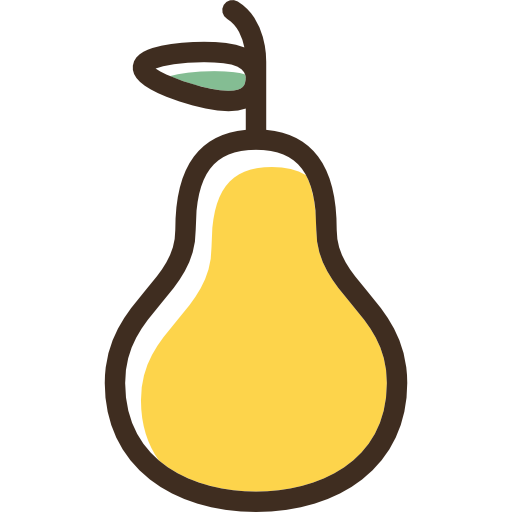

<ion-header [translucent]="true">
  <ion-toolbar>
    <ion-buttons slot="start" [routerLink]="['/home']" class="back">
      <ng-content select="[back]" size="large"></ng-content>
      
    </ion-buttons>
    <ion-title>Pear Store</ion-title>
    <ion-buttons slot="end">
      <ion-button routerLink="/shopping">
        <ion-icon name="cart-outline"></ion-icon>
        <ion-badge color="danger">{{ cardLength }}</ion-badge>
      </ion-button>
    </ion-buttons>
  </ion-toolbar>
</ion-header>